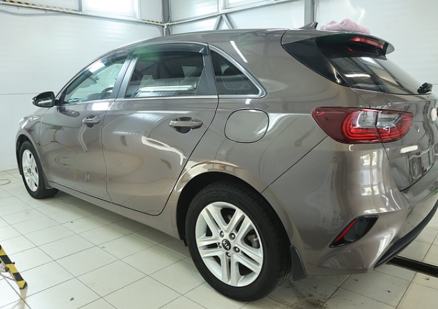
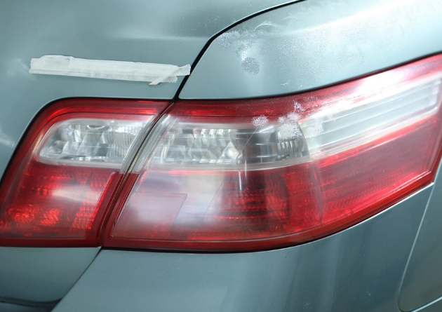
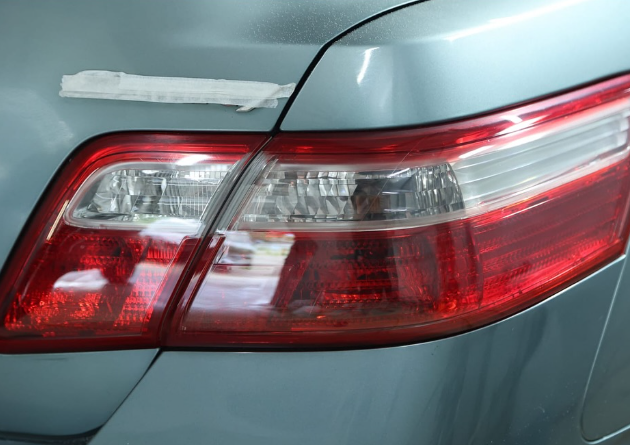

ДЕТЕЙЛИНГ В РАССУДОВО
Характер —
в деталях.
Блеск — в каждой.
Полировка, защита и бережный уход.
Для автомобиля, которым хочется любоваться.
01 / УХОД С ХАРАКТЕРОМ
Сохранить то,
что вам дорого.
От деликатной мойки до выразительного блеска кузова. Подберём то, что нужно вашему автомобилю.
02 / НИЧЕГО ЛИШНЕГО. ТОЛЬКО РЕЗУЛЬТАТ.
Разница, которую
видно.
Сдвиньте разделитель и рассмотрите детали.
Реальные фотографии работ Alligator.


03 / ИЗ НАШЕГО БОКСА
От подготовки
до последнего блика.
Внимание к поверхности
Работа с дефектами и выразительность отражений.
Два кадра одного результата.
04 / ОТКРЫТО О СТОИМОСТИ
У каждого авто —
свой подход.
Стоимость зависит от класса автомобиля, состояния поверхности и объёма работ. Точную цену согласуем до начала.
CARE. PROTECT. DETAIL.
Детейлинг-полировка
Керамические покрытия
Химчистка и комплексный уход
Ориентиры из опубликованного прайса студии. Актуальную стоимость уточняйте при записи.
05 / ALLIGATOR DETAILING
Место, где
детали важны.
Автомобиль — больше, чем способ добраться из точки А в точку Б.
Здесь занимаются его внешним видом и уходом: от чистоты салона до блеска кузова. В портфолио — полировка автомобилей, восстановление прозрачности оптики и работа с деталями.
Приезжайте с конкретной задачей или просто расскажите, что хочется изменить. Вместе определим подходящий уход.
ВАШ АВТОМОБИЛЬ. НОВОЕ ВПЕЧАТЛЕНИЕ.
Позвольте ему
сиять снова.
Обсудим состояние, подберём уход
и договоримся об удобном времени.